macro argomenti lista
Livello di rete
- definizione
- Protocollo IP
- best effort
- cosa cerca di fare
- riduzione perdita datagrammi
- consegna con basso ritardo
- consegna in ordine
- il livello di rete si divide in 2 principali funzioni
- Inoltro
- basato su destinazione
- IP classful addressing
- Notazione CIDR
- Route Aggregation
- TCAM+priority encoder
- come ottiene IP un ISP
- ICANN
- generalizzato
- tabella di flusso
match+action+counter+priority- instradamento
- Frammentazione datagrammi
- PMTUD
- la rete inoltre si può dividere in 2 principali piani
- piano di controllo
- piano dati
- SDN
- cosa sono
- dove sono posizionate
- southbound northbound
- Openflow
- Router
- tabella di inoltro
- tabella di routing
- sottorete
- porta di ingresso
- porta di uscita
- commutazione
- centralizzata
- decentralizzata
- 3 tipologie
- Memoria
- bus
- Crossbar switch
- multistage
- gestione buffer dei router
- 3 politiche
- tail drop
- priorità
- marcatura
- DHCP
- Discovery
- Offer
- Request
- Ack
- NAT
- come funziona
- Ipv6
- tunneling
- AS
- intra-AS
- backbone
- nodi interni
- inter-AS
- OSPF
- BGP
- I-BGP
- E-BGP
- rotta BGP
- AS-PATH
- Next-HOP
- sessione BGP
- ICMP
- messaggi ICMP
- traceroute
- Algoritmi di instradamento
- Globali
- Non globali
- centralizzati
- decentralizzati
- statici
- dinamici
- Dijkstra
- Vector Distance
LIVELLO DI RETE
-
Introduzione*
- il livello di rete si occupa di trasportare datagrammi da un host mittente a un host destinatario che possono trovarsi anche su reti differenti
-
Descrizione protocollo IP*
- protocollo fondamentale del livello di rete, si occupa del vero e proprio trasferimento dei datagrammi attraverso una rete di dispositivi
- È BEST EFFORT, non da garanzie dei servizi che offre ma fa del suo meglio
- servizi che vuole offrire la rete:
- servizi per il singolo datagramma
- consegna garantita
- consegna con ritardo ridotto
- servizi per datagrammi multipli(flussi)
- consegna in ordine
- banda di trasferimento minima garantita
- frammenti che arrivano a intervalli regolari
- servizi per il singolo datagramma
- servizi che vuole offrire la rete:
- DATAGRAMMA IP
- intestazione con indirizzi IP sorgente e destinazione, lunghezza totale del datagramma versione e TTL, protocollo usato al livello superiore, checksum
- corpo dati 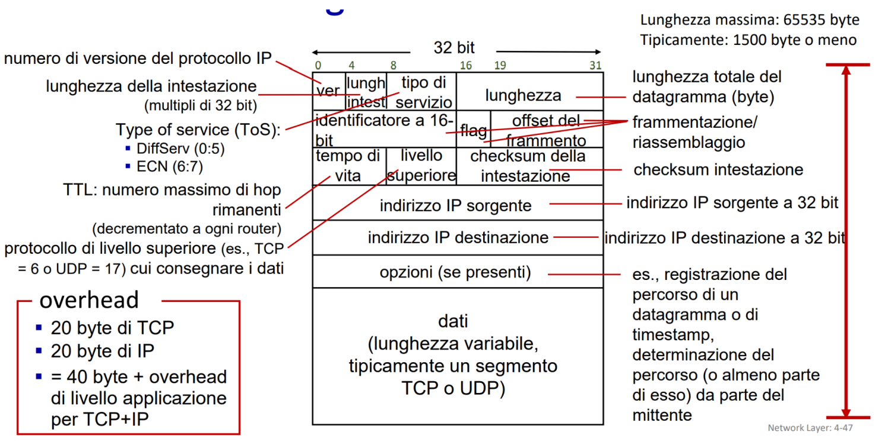
-
FRAMMENTAZIONE DATAGRAMMI
- se un datagramma supera la MTU(Maximum Transmission Unit)
- viene frammentato con stesso identificatore
- flag che indica se è l’ultimo del suo blocco,
- offset per indicare dove si inserisce nel datagramma totale
- seguendo questi campi viene riassemblato nel destinatario finale
- PMTUD (Path Maximum Transmission Unit Discovery)
- obiettivo: scoprire quanto deve essere grande al massimo la MTU in 2 modi
-
- ICMP invia un datagramma con obbligo di non frammentazione, se riceve una segnalazione dal router che da un obbligo di frammentazione allora bisogna modificare la MTU con quella suggerita da parte del router
-
- Mitigazione durante l’handshake, insomma viene accordato prima
-
- obiettivo: scoprire quanto deve essere grande al massimo la MTU in 2 modi
-
funzioni chiave del livello di rete
- inoltro
- si occupa dell’effettivo invio dei datagrammi
- si divide in:
- basato sulla destinazione
- usa indirizzo IP e la tabella di inoltro
- generalizzato
- guarda altri campi come il protocollo e il servizio
- usato su reti più complesse
- tipo Match+Action
- basato sulla destinazione
- instradamento
- processo che calcola i percorsi nella rete serve per effettuare un inoltro dei datagrammi coerente con l’infrastruttura di rete
- inoltro
-
classful addressing
- utilizzo di classi prima dell’invenzione di CIDR per definire indirizzi IP
-
come trovare Ip nell’inoltro basato sulla destinazione
- i router hanno un sacco di IP sulla tabella di inoltro
- come capire l’IP di input a quale appartiene?
- CIDR standard di formattazione che divide IP in 2 parti indirizzo subnet e indirizzo host
- funziona tipo indirizzo/16, indica che i primi 16 bit sono della subnet e i successivi 32-16 sono dell’host
- potremmo avere più IP simili in termini di bit, viene effettuata una ricerca della corrispondenza sulla tabella fino ai bit meno significativi, l’indirizzo con più informazioni viene selezionato
- CIDR standard di formattazione che divide IP in 2 parti indirizzo subnet e indirizzo host
- come capire l’IP di input a quale appartiene?
- TCAM+ priority encoder
- usata per rappresentare le tabelle di inoltro
- TCAM è una memoria speciale che permette di trovare la riga con l’IP adeguato in un tempo ridotto
- quando ci sono più indirizzi IP simili, entra in gioco il priority encoder che sceglierà quello con la priorità più alta 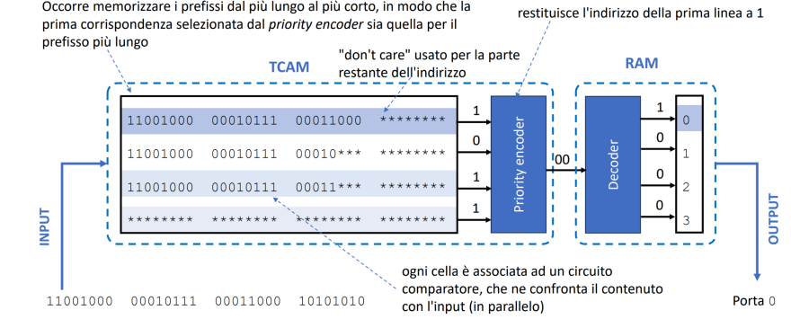
- i router hanno un sacco di IP sulla tabella di inoltro
-
divisione in 2 del livello di rete
- piano dei dati
- funzione locale dei router che decide come inoltrare un datagramma
- piano di controllo
- si occupa della logica globale della rete 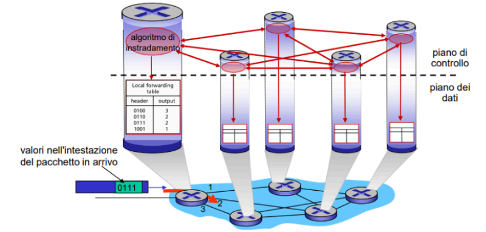
- piano dei dati
-
SDN(Software-Defined Networking)*
- architettura dove il piano di controllo è centralizzato in un unico server per tutta la rete
- router esecutori il controller calcola lui le tabelle di inoltro
- posizionamento di SDN
- abbiamo il piano dei dati con i vari router e le AS
- poi a un livello intermedio abbiamo le SDN con il controller
- ancora sopra abbiamo il piano di controllo con le varie applicazioni di gestione della rete

- architettura dove il piano di controllo è centralizzato in un unico server per tutta la rete
-
come è fatto il controller delle SDN
- è diviso in
- Livello di interfaccia con le applicazioni
- Livello che si collega alle app del piano di controllo, attraverso varie API north-bound fornisce a loro dell informazioni
- Gestione dello stato di rete
- Database che contiene le varie info sulla rete, router, link, host e switch
- Comunicazione con i dispositivi che controlla
- Attraverso protocolli come Open Flow comunica con i vari dispositivi della rete come switch ecc…
- questo insieme di protocolli è detto Southbound API

- Livello di interfaccia con le applicazioni
- è diviso in
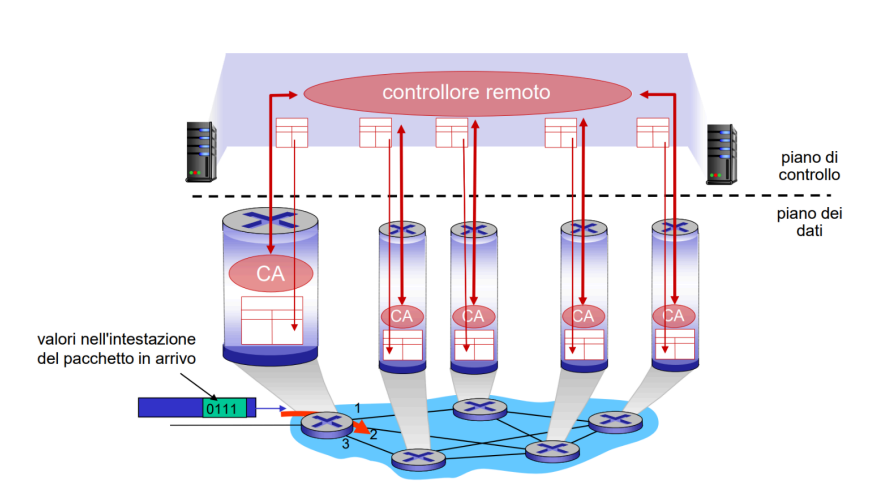
-
Router*
- dispositivi di rete che hanno il compito di instradare datagrammi
- se non c’è la SDN si divide in
- piano di controllo
- via software
- piano dati
- hardware
- struttura di commutazione
- componente del router che permette di instradare i datagrammi da una porta di ingresso a una di uscita
- porte di ingresso
- interfacce destinate all’ingresso dei datagrammi ai router
- ogni porta deve ricevere e processare un datagramma in modo veloce
- è divisa in step
- terminazione di linea
- riceve i bit grezzi e li passa al successivo step
- elaborazione al livello di collegamento
- interpreta il frame e decapsula il datagramma
- ricerca e inoltro
- guarda il datagramma e capisce a quale struttura di commutazione inoltrarlo
- terminazione di linea
- porte di uscita
- prende input da un commutatore e poi esegue gli step inversi delle porte di ingresso
- accodamento in entrata e in uscita
- in entrata potrei avere problemi di HOL
- in uscita potrei avere problemi di buffer troppo pieno e quindi scarti 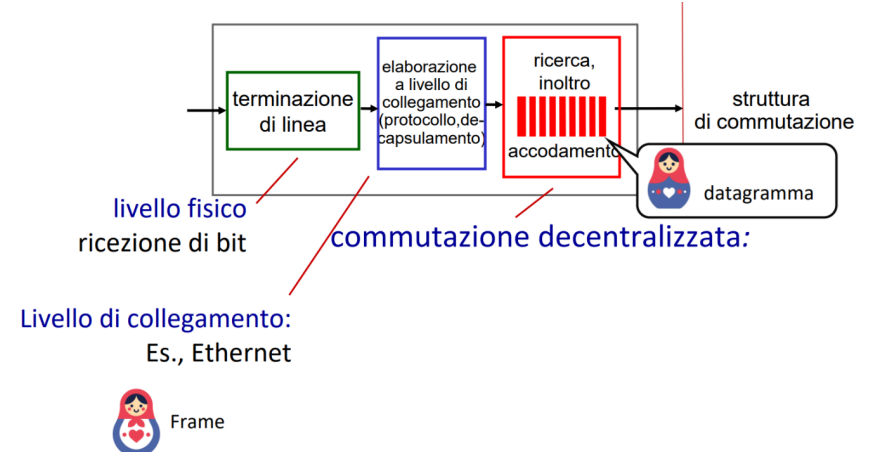
- piano di controllo
-
Commutazione*
-
componente del router che permette di instradare i datagrammi da una porta di ingresso a una di uscita
- centralizzata
- tutto passa per una cpu unica del router
- decentralizzata
- ogni porta del router ha una sua piccola cpu che elabora a quale porta di uscita mandare il pacchetto
- 3 strutture
- 1 memoria
- tutte le porte hanno una memoria condivisa
- i datagrammi vengono copiati dentro essa e le porte di uscita copiano il tutto
- lento
- 2 bus
- bus tra le porte di entrata e uscita
- problemi di concorrenza del bus
- bus tra le porte di entrata e uscita
- 3 interconnessione
- parallelismo
- si divide in
- crossbar
- matrice di bus
- multistage
- piccoli switch tra le due porte che indirizzano il tutto 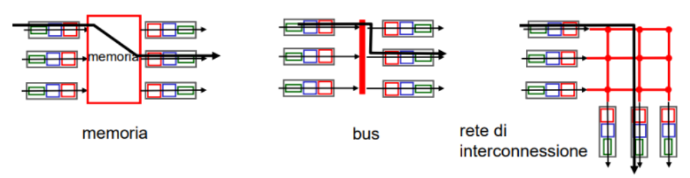
- crossbar
- 1 memoria
- centralizzata
-
Gestione del buffer*
- troppo buffering causa aumenti di RTT facendo allocare troppi pacchetti nella rete
- 3 politiche di scarto
- tail drop
- viene scartato l’ultimo che arriva
- priorità
- i pacchetti hanno una priorità
- marcatura
- prima di scartare invia dei segnali come ECN per avvisare che il buffer è pieno
- tail drop
- 3 algoritmi di scheduling per decidere quali mandare prima
- FCFS first come first served
- il primo che arriva è il primo ad uscire
- con priorità
- ogni pacchetto viene classificato con una sua priorità e viene definito in quale ordine inviarli
- starvation: una delle code potrebbe non essere mai selezionata
- RR Round Robin
- sempre diviso in classi ma si invia un po di tutto
- WFQ Weighted Fair Queuing
- ogni priorità ha un suo spazio di banda per mantenere le cose fair
- FCFS first come first served
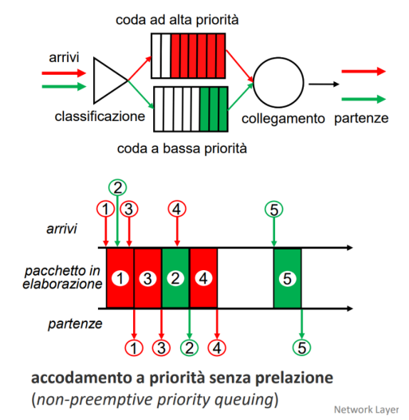
Indirizzi IP e gestioni varie
-
Sottorete
- definizione
- insieme di dispositivi che possono comunicare tra loro senza dover passare per un router ma uno switch si
- definizione
-
DHCP(Dynamic Host Configuration Protocol)
- definizione
- è una alternativa al sistema manuale dove bisognava scrivere gli indirizzi IP in fase di inizializzazione della macchina
- in DHCP è presente un server che assegna ai nuovi host in ingresso un IP dinamico che può variare nel tempo
- questo server si trova di solito interno ai router
- 4 step del DHCP
-
- Discover
- l’host che entra nel server manda un broadcast per trovare se ci sono DHCP disponibili
-
- Offer
- il DHCP offre un indirizzo IP all’host
-
- Request
- l’host conferma l’IP offerto al DHCP
-
- Ack
- il DHCP invia un Ack di assegnazione dell’IP
-
- non serve solo per IP
- suggerisce quale Server DNS usare
- Router First-Hop da usare
- ovvero router gateway, colui che si collega ad altre reti non interne facendo da tramite 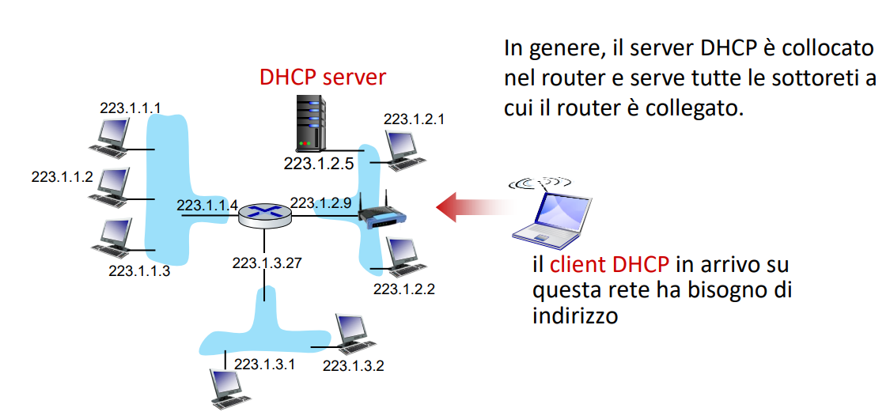
- definizione
-
Come si ottengono IP pubblici/privati da condividere con la tua rete
- ISP ha un grande blocco di indirizzi che assegnerà a sua volta ad ogni rete che ne richiede
- un ISP ha magari
indirizzoIP/x- questo significa che ho i primi x bit fissi e gli altri posso usarli per definire IP di rete da condividere con i richiedenti
- se x=20 posso dare indirizzi IP
- un ISP ha magari
- Route aggregation
- è una tecnica di aggregazione di indirizzi IP per alleggerire la tabella di instradamento condivisa tra i vari ISP/grandi router
- ognuno scrive sulla tabella solo il blocco di indirizzi senza precisarli tutti
- se un indirizzo IP specifico passa a un’altra rete quella determinata rete deve fornire più dettagli di quell’indirizzo IP
- ricordiamo che viene data la precedenza alle corrispondenze migliori
- ISP ha un grande blocco di indirizzi che assegnerà a sua volta ad ogni rete che ne richiede
-
ICANN
- organizzazione centrale che gestisce gli indirizzi IP al livello mondiale
- fornisce questi indirizzi IP a 5 grandi fornitori RR
- questi 5 RR forniscono poi i vari blocchi di indirizzi agli ISP
- fornisce questi indirizzi IP a 5 grandi fornitori RR
- organizzazione centrale che gestisce gli indirizzi IP al livello mondiale
-
NAT(Network Address Translation)
- definizione
- gli indirizzi IPv4 sono limitati
- è una tecnica che riduce gli indirizzi IPv4
- per ovviare a questo problema esistono ad esempio dei router NAT che consentono di utilizzare solo un indirizzo IP pubblico per tutta la rete che gestiscono
- i dispositivi della rete avranno un indirizzo IP privato
- il router NAT dovrà ogni volta cambiare le varie intestazioni dei datagrammi mettendo l’IP pubblico, i dispositivi esterni alla rete vedranno solo il router NAT come dispositivo nella rete e poi dovrà essere lui a condividere i datagrammi corretti nella rete interna al dispositivo corretto
- per ricordarsi a chi deve condividere quel datagramma utilizza una tabella NAT con salvate le varie occorrenze 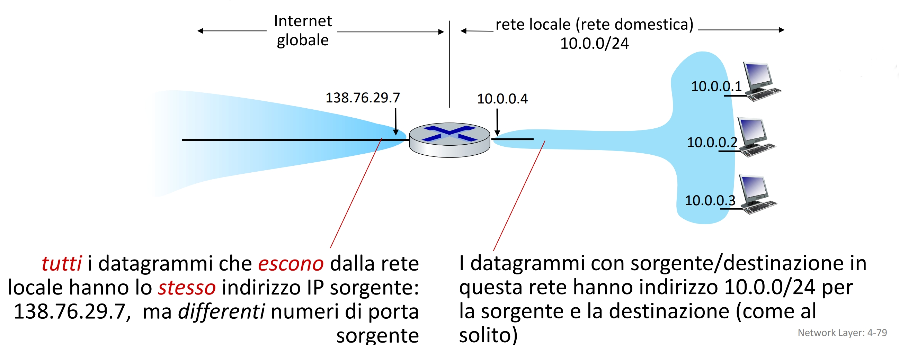
- definizione
-
IPv6
- descrizione
- Nasce per aumentare i possibili IP
- è a 128 bit non a 32
- tunneling
- non è retrocompatibile ma ci sono router misti che usano entrambi gli IP
- lavorano su reti miste con router Dual Stack
- ho un datagramma IPv6 che deve passare in una rete IPv4, per farlo incapsulo IPv6 in IPv4 e poi de capsulo il tutto
- non è retrocompatibile ma ci sono router misti che usano entrambi gli IP
- cosa avviene nella frammentazione
- frammentazione non presente, scopro la MTU del datagramma IPv6 con PMTUD 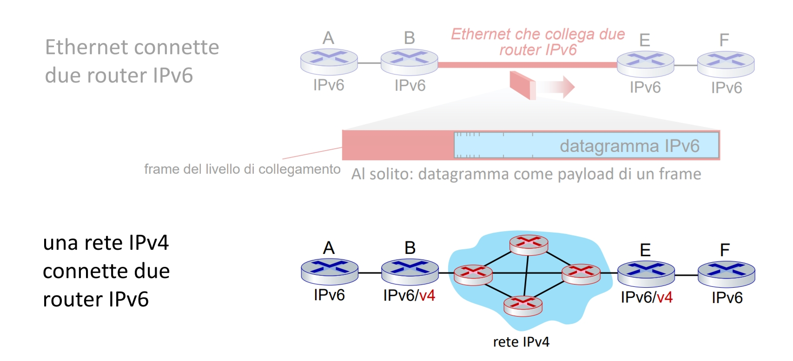
- descrizione
-
Tabella dei flussi o di inoltro
- per capire dove inoltrare i vari datagrammi esiste questa tabella
- per gli inoltri di tipo generalizzato avevamo detto che non era sufficiente un indirizzo IP e basta
- vengono usati dei dati interni al datagramma ricercati con la funzione Match
- che poi forniscono le informazioni per una determinata Action che deve fare il router
- inoltro, scarto, modifica e se siamo in un SDN può essere inviato al controller
- da qui nasce Match+ Action che è la vera e propria tabella
- se due Match hanno due action diverse viene data una priorità alle Action vince quella con priorità maggiore 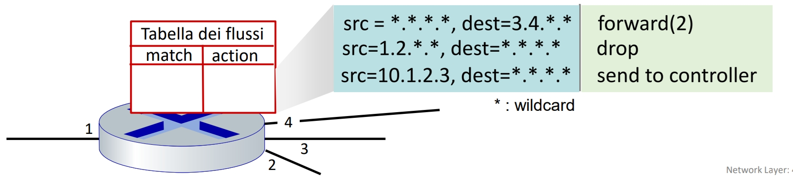
-
Open flow
- concetto
- rappresenta uno standard che caratterizza la struttura delle reti a SDN, dove il piano di controllo è demandato a un controller
- OpenFlow ha una tabella che contiene
- Match, è diviso in livelli perché l’informazione potrebbe stare su quello di collegamento, di rete, di trasporto
- Action azioni che si possono fare come blocchi
- Priorità, per Match con più Action
- Contatore dei byte o dei pacchetti, che tiene conto di quelli che hanno usato una certa regola
- protocollo
- protocollo utilizzato dai dispositivi OpenFlow come router ecc… che permette di comunicare con il server controller della SDN

- protocollo utilizzato dai dispositivi OpenFlow come router ecc… che permette di comunicare con il server controller della SDN
- concetto
-
Load Balancing
- caratteristica dell’inoltro generalizzato
- consente di spalmare il carico su più porte per instradare più pacchetti che vanno a uno stesso indirizzo IP
-
MiddleBox
- dispositivi che forniscono servizi all’interno della rete e che non sono router
- come i firewall o i NAT o i DHCP
Algoritmi di instradamento
- definizione
- Algoritmi che si occupano di riempire la tabella di instradamento, cercando un percorso migliore con la distanza minore possibile tra i vari dispositivi nella rete
- tipologie
- Globale
- ha una visione ampia della rete
- Non globale
- non ha bisogno di avere una visione ampia
- Centralizzato
- calcolo dei percorsi centralizzato
- conoscenza globale della rete
- Decentralizzati (link-state)
- ogni dispositivo deve calcolare i percorsi
- inizialmente il router conosce solo i costi dei dispositivi adiacenti
- Globale
- inoltre anche
- statici
- cambiano raramente
- richiedono aggiornamenti manuali
- dinamici
- si aggiornano automaticamente al variare dei costi dei vari collegamenti tra nodi
- statici
- Dijkstra
- algoritmo Globale link-state che consente di trovare il percorso migliore ha un funzionamento iterativo
- Vector Distance
- È di tipo decentralizzato
- Si basa sull’equazione di Bellman-Ford e funziona così: ogni router sa quanto costa raggiungere le reti vicine, e scambia informazioni con i router vicini per scoprire nuovi percorsi. Nel tempo, ogni router costruisce una tabella che indica: la distanza verso ogni rete e da quale router passare per raggiungerla nel modo più economico.
- cambio dei costi
- problema di conteggio infinito
- inversione avvelenata
AS (Autonomous System)
- definizione
- insieme di router scalabili interconnessi tra loro che si trovano nella stessa ISP o amministrazione di rete
- strategia per gestire in modo scalabile l’instradamento
- differenza tra
- intra-AS
- tutti i router che si trovano nella stessa AS e condividono gli stessi protocolli
- inter-AS
- insieme dove deve essere effettuato un routing tra AS differenti, attraverso dei router gateway che appunto li collegano tra di loro
- intra-AS

- protocolli usati nell’intra-AS
- RIP
- EIGRP
- OSPF
- definizione
- di tipo Link-State, i router si scambiano tra loro le varie informazioni di instradamento in broadcast(flooding) e aggiornano così la mappa di instradamento
- il messaggio usa protocollo TCP e algoritmi di Dijkstra per effettuare i calcoli
- è divisa in 2 livelli ma riguarda comunque tutta la intra-AS
- Area Locale
- sottoinsieme della rete senza router gateway
- Backbone
- Dorsale che collega tutti i dispositivi della stessa area intra-AS
- Area Locale
- estensioni associate
- per reti senza SDN viene usato OSPF, permettendo di scambiare informazioni utili per effettuare instradamenti corretti senza uso di SDN
- MPLS-TE protocollo che consente di evitare congestione
- definizione

BGP protocollo usato nella inter-AS
- definizione
- permette di far comunicare tra loro i vari router gateway si divide in due modalità
- i-BGP
- modalità che consente di inviare informazioni alla intra-AS riguardo le cose che vengono inviate dalla inter-AS
- e-BGP
- modalità che consente lo scambio di informazioni tra AS esterne
- funziona attraverso annunci
- sessione BGP
- è una connessione TCP semi permanente tra i router gateway detti peers
- messaggi BGP
- servono per stabilire e mantenere la connessione TCP tra peer
- keepalive
- serve per mantenere la connessione attiva
- open
- avvia connessione tra due peer
- update
- annuncia nuove rotte o ritira vecchie rotte
- notification
- segnalazione di errori
- keepalive
- servono per stabilire e mantenere la connessione TCP tra peer
- concetto di rotta BGP
- insieme di informazioni inviate tra AS che indicano il percorso da seguire
- prefisso
- indica la rete di destinazione con il vero e proprio indirizzo
- attributi
- informazioni sul percorso per evitare cicli oppure trovare facilmente il primo router di salto
- AS-PATH
- indica il vero e proprio percorso, la successione di AS
- Next-Hop
- rappresenta il router gateway
- prefisso
- insieme di informazioni inviate tra AS che indicano il percorso da seguire
- Esempio con o senza percorsi multipli
- solo i router gateway possono modificare router di next hop per indicare “se volete inviare ad altre AS passate per me”
- un router che lavora in inter-AS annuncia anche l’AS-PATH ovvero il percorso che deve seguire per raggiungere quella determinata destinazione
- su percorsi multipli è simile solo che vengono seguite delle policy
- Criteri usati da router BGP per riempire tabella di instradamento
- 1.Next Hop modificato
- i router gateway modificano il Next-Hop su loro stessi così i dispositivi nella intra-AS devono solo raggiungerlo seguendo un percorso nella inter-AS mediante OSPF
- 2.Next Hop non modificato
- il router gateway non modifica il Next-Hop e lascia quello da lui raggiungibile di un’altra AS, i dispositivi interni devono capire che devono passare per il router gateway
- 3.Instradamento a patata bollente
- se ci sono più percorsi simili prende quello meno costoso mandando il pacchetto nella inter-AS meno costosa per far passare il traffico il più velocemente possibile
- 4.Forzare percorsi tramite annunci
- annuncio=azione di inviare un messaggio update tramite BGP
- per non intasare il traffico della sessione BGP vengono inviati solo gli annunci più utili
- se ad esempio so che un AS può raggiungerne un altro senza passare per un determinato AS, esso sceglie di non annunciare il proprio percorso
- 1.Next Hop modificato
IP ANYCAST
- definizione
- più server con stesso indirizzo IP pubblico, il client avrà scambi con quello più vicino
- offrono stessi contenuti o servizi

Ingegneria del traffico
- definizione
- insieme di tecniche che consentono di modulare e ottimizzare il traffico della rete
Concetto di IBN(Intent-Based-Networking)
- definizione
- sistema dichiarativo che funziona attraverso intenti per modificare la struttura della rete in modo automatizzato
- es: voglio ridurre la latenza tra due router, spiego l’intento e essi verranno configurati in tal maniera
- colui che effettua queste modifiche è il controller SDN
ODL e ONOS
- definizioni
- due tipi di controller
- ODL
- usa API per comunicare con applicazioni
- ONOS
- controller che usa nel pratico il concetto IBN con gli intenti
ICMP(Internet Control Message Protocol)
-
cosa è
- protocollo incapsulato nel protocollo IP consente di scambiare messaggi utili per la gestione tra host e router
-
messaggio ICMP
- composto da
- tipo
- codice
- checksum
- altri dati
- composto da
-
tipi di messaggio
- 1.Echo Request(0) o Reply
- permettono di capire se un host è raggiungibile e con quale distanza
- 2.Destination Unreachable(3)
- utilizzato per segnalare Host non raggiungibili
- 3.Source Quench
- permetteva di segnalare congestioni ora deprecato
- 4.TTL expired(8)
- serve per quando imposti un determinato limite di hop utilizzando un contatore TTL che decrementa ad ogni hop
- se arriva a 0 invia questo segnale 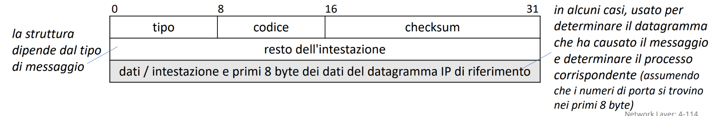
- 1.Echo Request(0) o Reply
-
Traceroute
- strumento di diagnostica per capire quanti hop deve effettuare un pacchetto sonda per raggiungere un determinato punto di destinazione
- di volta in volta si incrementano i TTL 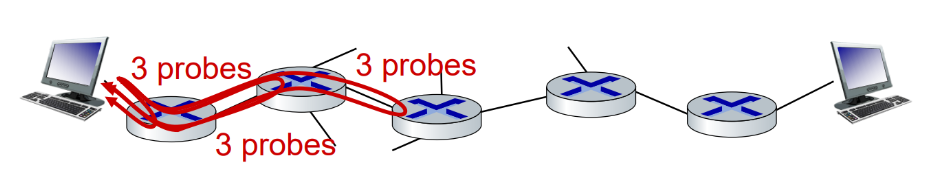
-
nuova versione ICMPv6
- adattato ai nuovi router che non fanno troppa frammentazione
Gestione delle reti
- descrizione e componenti
- per gestire una rete adeguatamente si ha bisogno di
- server di gestione
- server che raccoglie dati e invia comandi per configurare i dispositivi della rete
- dispositivi di rete da gestire
- router switch ecc…
- dati
- dati utilizzati per gestire la rete come statistiche varie
- agente di gestione
- Software di gestione della rete
- protocollo di gestione di rete
- protocolli utilizzati per comunicare ai dispositivi i vari cambiamenti
- server di gestione
- per gestire una rete adeguatamente si ha bisogno di
- metodi per gestire una rete
- CLI
- linea di comando manuale
- metodo diretto ma non scalabile anche se prevede uso di eventuali script automatizzati
- SNMP/MIB
- interfaccia server che usa come protocollo di comunicazione per i dispositivi SNMP
- i dati raccolti sono organizzati in MIB
- non propriamente automatizzato
- NETCONF/YANG
- YANG è un linguaggio astratto che consente di configurare delle reti
- la configurazione e la modifica di questi YANG per poi cambiare i dispositivi remoti sono mediante un protocollo NETCONF
- consente commit atomici
- ideale per reti complesse, dinamiche e centralizzate
- CLI